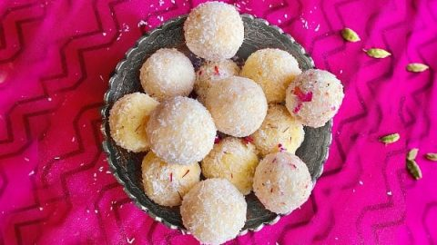

The curry recipe
Introduction to the cuisine
Indians are known for their unique taste and experimental behavior when it comes to food. Many Indian desserts are fried foods made with sugar, milk or condensed milk. Ingredients and preferred types of dessert vary by region. In the eastern part of India, for example, most are based on milk products. Many are flavoured with almonds and pistachios, spiced with cardamon, nutmeg, cloves and black pepper, and decorated with nuts, or with gold or silver leaf.
Coconut Ladoo
Gulab Jamun
Malpua
Menu for Dessert
Dessert recipes
Coconut Ladoo
Instant Coconut Ladoo: a popular Indian sweet recipe made using 3 ingredients that’s ready in 10 minutes. This recipe makes 15 ladoos.

ingredients
- Coconut Powder (unsweetened)
- Condense Milk
- Cardamom Powder
-->
Method
Start the recipe by slightly roasting the coconut powder for a minute as this brings out a delicious coconut aroma. Once that’s taken care of, it’s just mix, shape and enjoy
Gulab Jamun
Gulab Jamun Dessert Parfait (Light Indian Dessert): A luscious, healthy Indian Diwali dessert recipe made using gulab jamun, yogurt, cream and lots of love.
Gulab Jamun Dessert Parfait

Ingredients
- 12 Small Gulab Jamun
- 2 Cups Plain Yogurt
- 1/2 Cup Cream - whipped
- 1 Tsp Saffron
- 3 Tbsp Milk
- 3 Tbsp Water
- 1 Tsp Honey
- 1/4 Cup Pistachio - chopped
Method
Take 6 gulab jamuns and thinly slice them. Keep aside.
Slice the other 6 gulab jamuns in quarter.
In a large bowl, mix yogurt and cream together.
Heat milk in a pan, add water, saffron and bring to a boil.
Stir the milk mixture and turn off the heat.
Once the mixture is slightly cool, add honey, mix well and keep aside.
Now, take a glass/serving bowl and add 2 tbsp yogurt mix.
Place, 3-4 thinly sliced gulab jamuns (in a circle, covering all sides) and spread 1 tbsp yogurt mix over it.
Spread 1/2 tsp saffron mix and add 2 tbsp yogurt mix.
Decorate top with 1-2 quarter gulab jamuns, saffron mix and pistachio.
Complete all the serving glasses similarly.
Once the parfait are made, place all the glasses in fridge (for atleast 30 minutes).
Serve Chilled.>
Malpua
How to Make Instant Malpua: soft, delicious instant malpua recipe using milk powder, sooji and flour. Perfect for Holi Dessert and can be kept in the fridge for 3 days. This recipe is without using khoya

Ingredients
- Sooji (Semolina)
- All-Purpose Flour
- Milk Powder
- Yogurt
- Cardamom & Fennel
- Sugar Syrup infused with saffron and cardamom
- 1 Cup Olive Oil - for frying the malpua
- 1 Cup Sugar
- 1/2 Cup Water
- 1/4 Tsp Saffron
- 1/4 Tsp Cardamom Powder
- 1 Tbsp Dry Rose Petals
3 Tbsp Slivered Almonds
Method
Step 1 Prepare Malpua batter
Malpua is a delicious recipe soaked in sugar syrup. Here’s a simple way of preparing this dish at home by following some very easy and simple steps. Take a bowl and mix together khoya, maida and sooji or semolina. Next, add cardamom powder and mix well once again. Gradually add water to prepare the Malpua batter. Ensure that the mixture has a pourable consistency and is not too thick. Once the batter is ready, keep it aside for few minutes. Take a small bowl and soak saffron in water to make saffron water.
Step 2 Fry the malpua and garnish with rabri and pistachios and serve
Now, heat oil in a pan over a low flame. When the oil is hot enough, pour a ladleful of the mixture and spread evenly. Keep the flame low and cook until the malpua is golden from both sides. Remove the cooked malpua and drain the excess oil. Drop the malpua in sugar syrup and allow it to soak for 10 minutes. Repeat the same with the remaining batter. Drain the malpuas from the syrup, garnish with pistachios, saffron water and rabri. Serve immediately.>